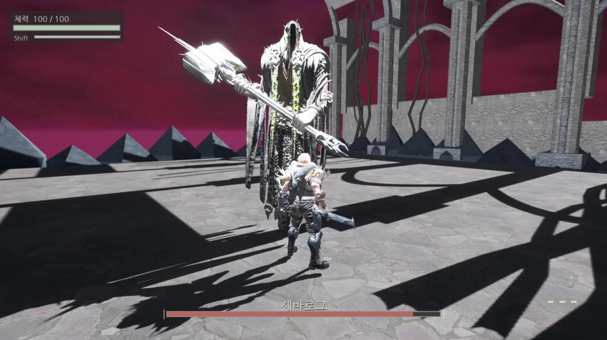

01 / 제작 포스트모템
드라고니아
빠른 공방에서도 읽을 수 있는 보스전
거대한 보스와 공격권을 주고받는 3D 액션. 공격 전조, 반격 기회, 격돌과 지형 붕괴를 조정한 과정을 담았습니다.
기획 판단과 역할 살펴보기
- 본인 역할
- 목표 경험과 패턴 방향 설계, 수정 우선순위 판단, 직접 플레이 평가. AI는 구현과 검사 지원.
- 설계 판단
- 공방은 빠르게 유지하되 공격을 읽을 시간은 확보하도록, 준비 동작과 실제 휘두름을 구분했습니다.
- 읽을 내용
- 기본 공방과 가독성 6–8p · 격돌 9–11p · 지형 변화 12–14p · 회고 16–18p
제작자 플레이에 기반한 회고입니다. 외부 이용자 검증은 다음 과제로 남겼습니다.